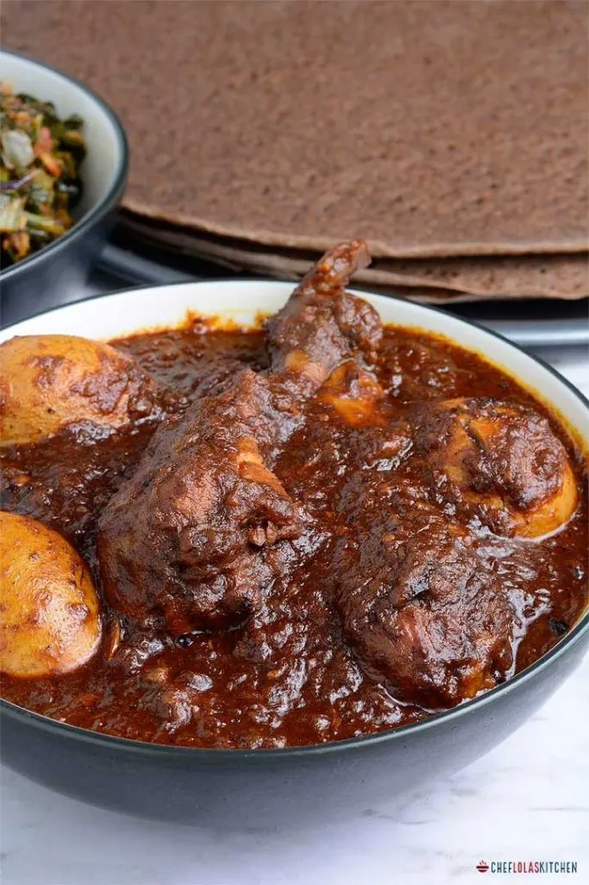

Doro Wat: Ethiopian Chicken Dish

Description
An incredibly fragrant, spicy, flavorful, rich slow-cooked Ethiopian chicken stew mostly eaten for special occasions and family gatherings.
Ingredients
- 1 cup butter, divided
- 1 onion, chopped
- 2 cups water, divided
- 1 can tomato sauce
- 3/4 cup berbere
- 1 teaspoon chopped garlic
- 4 skinless, boneless chicken breasts, cubed
- 1/3 cup sweet white wine
- 1/2 ground black pepper
- $ hard-boiled eggs
Steps
- Heat 1/2 cup butter in a skillet over medium-low heat. Cook and stir onion until translucent, 5 to 6 minutes. Add 1/2 cup water and tomato paste; stir until hot, about 2 minutes. Stir in remaining butter, berbere, garlic, and ginger. Adjust heat to low and cook until mixture thickens to paste consistency, 20 to 30 minutes.
- Stir remaining water into berbere paste; add chicken. Simmer until thickened to sauce consistency, about 45 minutes.
- Stir white wine, cardamom, and black pepper into the sauce; add hard-boiled eggs. Cook until sauce is reduced slightly, about 15 minutes more.